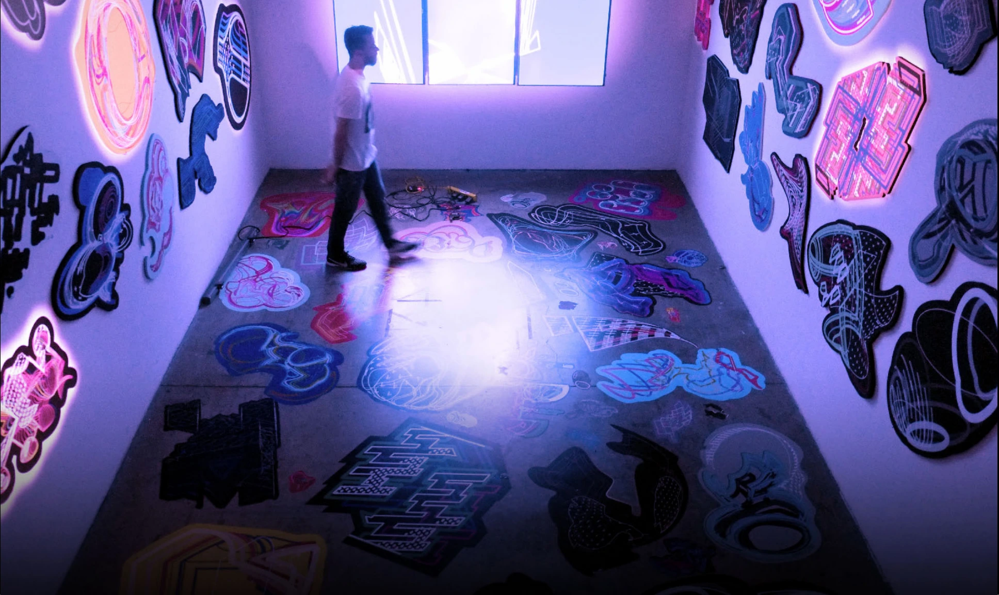
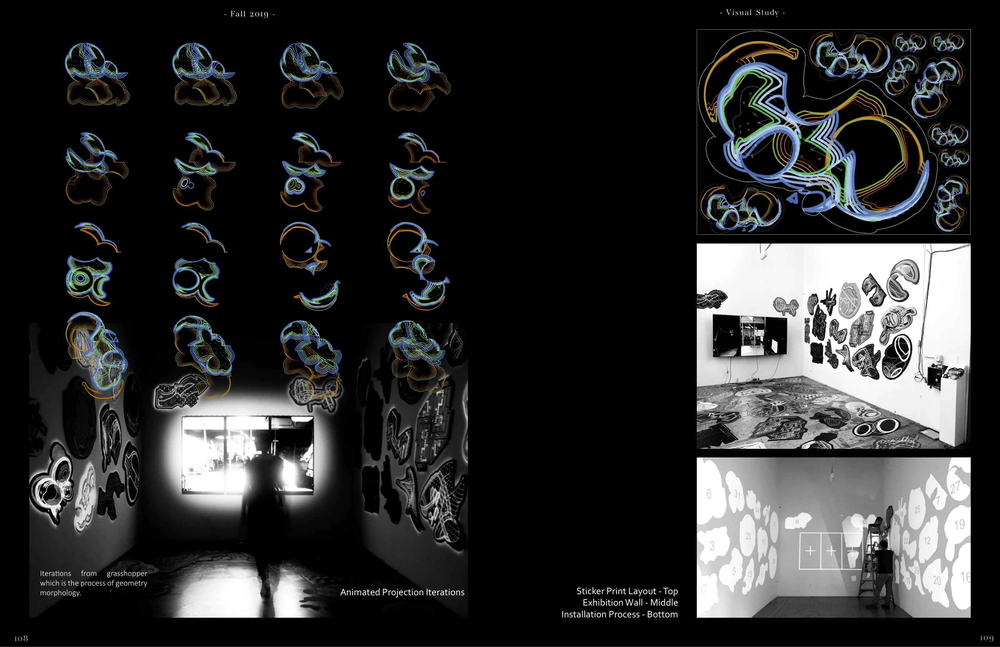
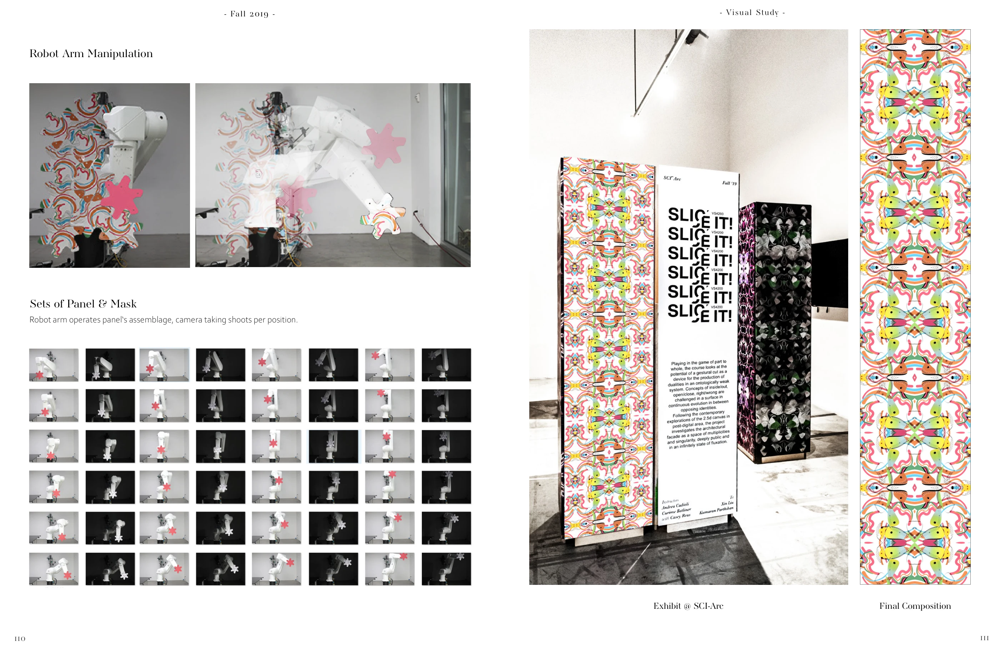
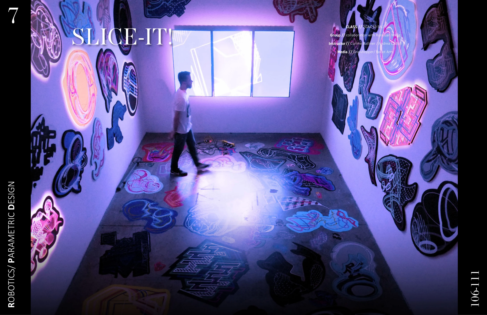

Slice It!
A visual study bringing parametric geometry, robotic panel manipulation, and animated projection into a physical installation.
Collaboration with Runhuan Wang · SCI-Arc, Fall 2019 · Instructors: Curime Batliner and Andrea Cadioli
Grasshopper · Robot arm

Geometry in motion
Grasshopper iterations explore geometric transformations. Animated projection studies and printed graphics carry these variations into the exhibition space.

From robot to installation
A robot arm manipulates panel assemblies while the camera records each position. Panel and mask studies, captured sequences, and final compositions document the translation from a digital process to a physical exhibit.

Inside the exhibition
The completed SCI-Arc installation brings together patterned surfaces, projected imagery, and the movement of visitors through the space.
